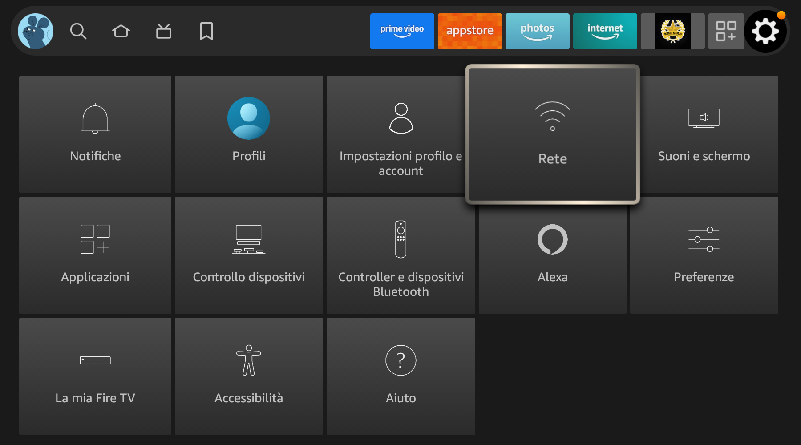
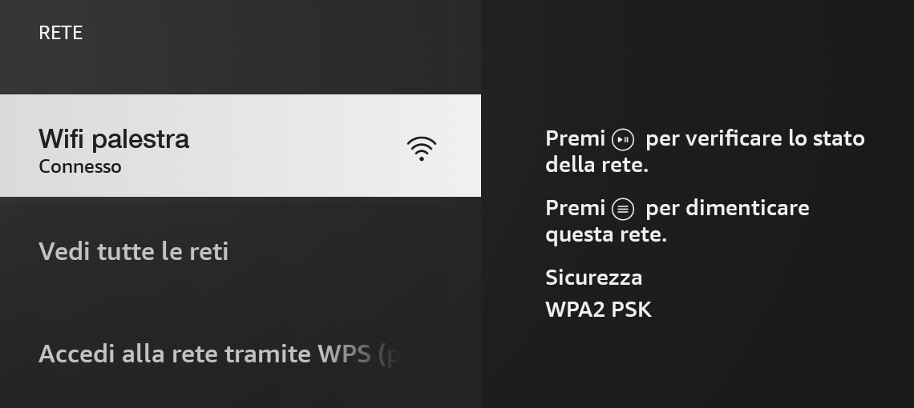
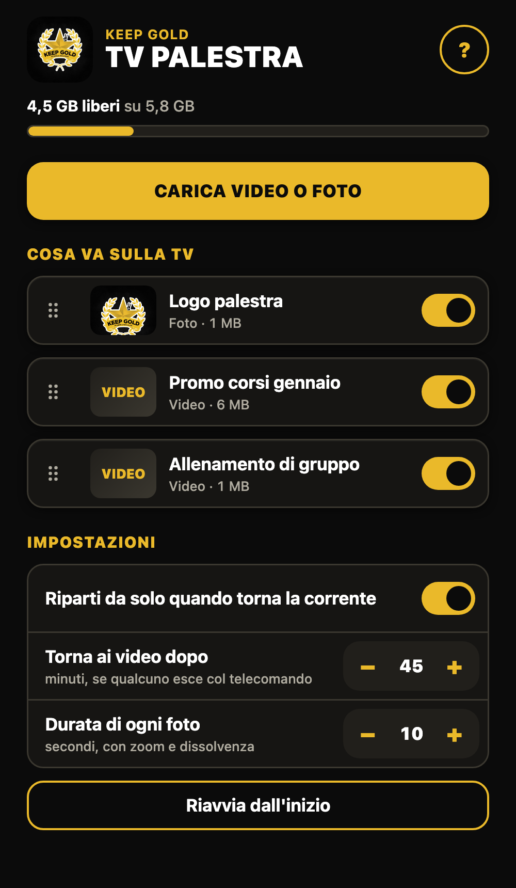
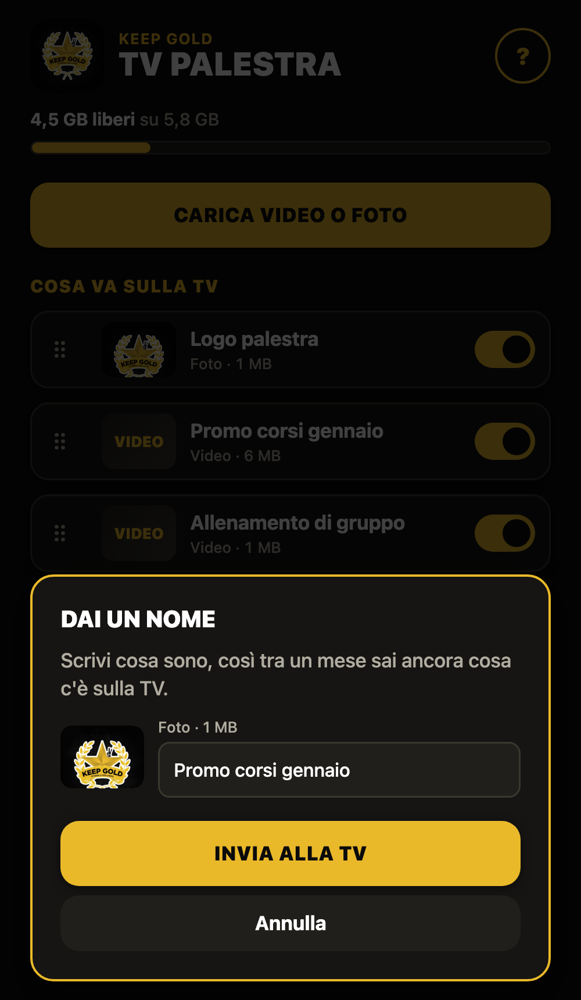
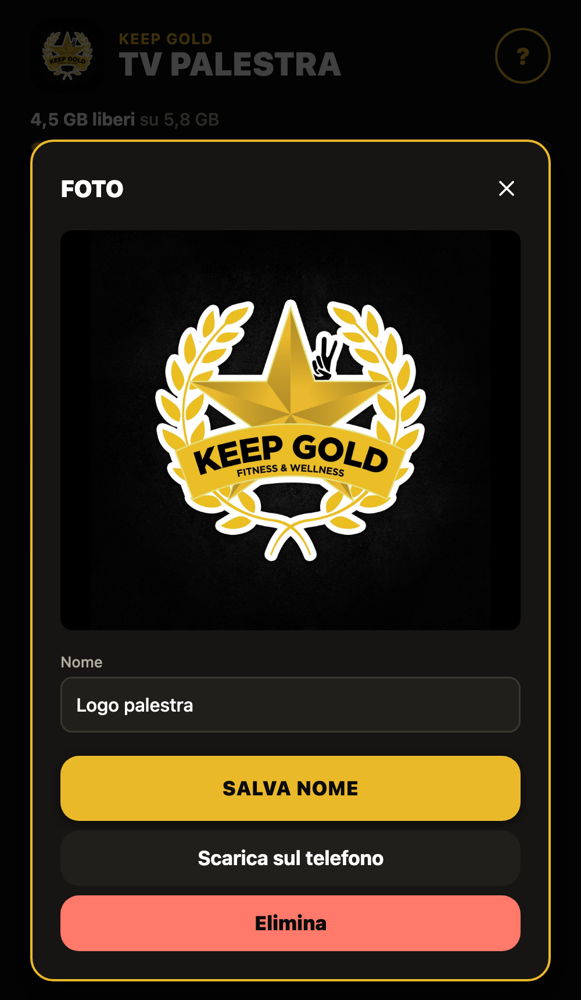

Come installare la TV dei video in palestra, collegarla al telefono e tenerla in funzione. Si legge in dieci minuti, si fa una volta sola.
La Fire TV è la chiavetta attaccata alla TV. All'accensione apre da sola i video, anche senza internet, e riparte da sola dopo un blackout.
Serve solo la prima volta, o se la wifi cambia nome o password. Prendi il telecomando.


Quando è collegata, sotto il nome c'è scritto Connesso.
Disegno di esempio: l'indirizzo sulla tua TV avrà numeri diversi.
Da qui gestisci tutto quello che va sulla TV. Una volta salvata, la trovi tra le altre app del telefono.



| Vuoi… | Fai così |
|---|---|
| Cambiare l'ordine | Trascina un contenuto tenendo premute le sei righe a sinistra. |
| Toglierlo per un po' | Spegni l'interruttore. Resta salvato ma non va in onda. |
| Rinominarlo, rivederlo, scaricarlo, eliminarlo | Tocca il contenuto: si apre la sua scheda. |
| Ripartire dal primo | Impostazioni › Riavvia dall'inizio. |
| Durata delle foto | Impostazioni › Durata di ogni foto. Le foto hanno sempre zoom lento e dissolvenza. |
| Ripartire dopo un blackout | Lascia acceso Riparti da solo quando torna la corrente. |
Finito? Chiudi la pagina: la TV va avanti da sola. Lo spazio libero è indicato in alto nella pagina.
| Succede che… | Prova così |
|---|---|
| Il telefono dice "TV non raggiungibile" | Controlla che la TV sia accesa e che il telefono sia sulla wifi palestra, aspetta un minuto e ricarica la pagina. Con Chrome: Impostazioni dell'iPhone, poi Chrome, e attiva Rete locale. |
| Sulla TV non compare COLLEGATO | La TV non è sulla wifi. Rifai la parte 2 e controlla che nome e password siano quelli giusti. |
| Sulla TV c'è la schermata Amazon | Lasciala stare: torna da sola. Per farlo subito tocca Riavvia dall'inizio dalla pagina. |
| Sulla TV c'è scritto NESSUN CONTENUTO | Non c'è niente di acceso: carica qualcosa o riaccendi un interruttore. |
| Sulla TV c'è scritto FILE NON LEGGIBILI | Elimina i contenuti più recenti e ricaricali dalla pagina. |
| Un caricamento si ferma | Lo schermo del telefono si è spento o la pagina è stata chiusa. Ricaricalo tenendo lo schermo acceso. |
| "Spazio insufficiente" | Elimina i contenuti vecchi che non usi più. |
| La TV si riavvia da sola o i video scattano | Quasi sempre è caldo o alimentazione: alimentatore originale alla presa e chiavetta all'aria. |
| La TV cambia ingresso o la chiavetta si spegne con la TV | Impostazioni › Suoni e schermo › Controllo dispositivo HDMI CEC › Disattivato. |
| Dopo un Forza arresto nelle impostazioni l'app non riparte | Aprila una volta a mano dalle app: da lì torna a ripartire da sola. |
Da fare una volta. Chi usa la TV tutti i giorni può saltare questa pagina.
| Dove | Cosa scegliere |
|---|---|
| Impostazioni › Suoni e schermo › Salvaschermo | Avvio: Mai |
| Impostazioni › Suoni e schermo › Schermo › Risoluzione video | 1080p 60 Hz (se l'immagine è tagliata ai bordi, usa Regola schermo nello stesso menu) |
| Impostazioni › La mia Fire TV › Opzioni sviluppatore › Debug ADB | Disattivato a lavoro finito. Serve solo al tecnico per gli aggiornamenti dell'app. |
| Router della palestra › Riserva indirizzo IP (DHCP) | Riserva un indirizzo fisso per la Fire TV, così l'icona sul telefono continua a funzionare. Il nome della voce cambia da router a router. |